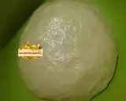
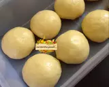
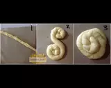
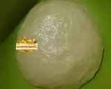
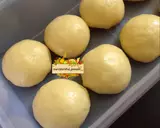
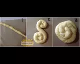

- 500 gr tepung terigu prot sedang / prot tinggi
- 1 butir telur utuh dan 1 kuning telur
- 2 sdm susu bubuk / susu kental manis
- 1/2 sdt garam
- 84 ml minyak goreng
- 225 ml air hangat
- Margarin secukupnya (hanya untuk olesan)
- Pelengkap topping:
Keju, susu kental manis, meses/coklat leleh
Semangkuk kecil gulai / kuahnya saja
Langkah-Langkah:
1. Siapkan wadah, campur air, minyak goreng dan telur, aduk hingga rata menggunakan wisk atau garpu
2. Masukkan tepung terigu, susu, dan garam, uleni sampai kalis

3. Bagi adonan sama rata, bentuk bulat-bulat, olesi margarin diseluruh bagian sampai rata (boleh pakai margari cair/minyak goreng). Setelah itu tutup dengan plastik dan lap basah, diamkan selama 1 jam

4. Ambil satu adonan, pipihkan hingga tipis olesi dengan margarin secara merata
5. Lalu gulung perlahan sampai bentuk memanjang dan sedikit ditarik agar lebih panjang[1]. Kemudian gulung melingkar dengan arah berlawanan jadi seperti huruf 'S'[2]. ketika sudah bertemu ditengah, lalu tumpuk Jadi satu[3]
6. Panaskan teflon, ambil adonan yang sudah di tumpuk jadi satu[3] kedalam teflon, langsung pipihkan dengan cara ditekan memutar menggunakan serokan penggorengan

7. Jika bagian bawah sudah sedikit mengeras, balik lalu tekan memutar lagi, balik tekan kembali hingga semua sisi berwarna kuning kecoklatan,
8. Jika semua sisi sudah berwarna kuning kecoklatan, angkat dan lakukan kembali pada adonan berikutnya hingga habis
9. Apabila sudah matang semua, sajikan dengan topping sesuai selera..roti ini enak juga dimakan bersama semangkuk gulai untuk pengganti nasi

10. Kalau membuat banyak, dan tidak langsung habis, bisa disimpan di dalam frezeer, dapat bertahan kurleb 1mingguan+. Jika mau disajikan kembali tinggal di panasin pakai teflon dan tidak perlu pakai minyak.
Langkah-Langkah:
1. Siapkan wadah, campur air, minyak goreng dan telur, aduk hingga rata menggunakan wisk atau garpu
2. Masukkan tepung terigu, susu, dan garam, uleni sampai kalis
3. Bagi adonan sama rata, bentuk bulat-bulat, olesi margarin diseluruh bagian sampai rata (boleh pakai margari cair/minyak goreng). Setelah itu tutup dengan plastik dan lap basah, diamkan selama 1 jam
4. Ambil satu adonan, pipihkan hingga tipis olesi dengan margarin secara merata
5. Lalu gulung perlahan sampai bentuk memanjang dan sedikit ditarik agar lebih panjang[1]. Kemudian gulung melingkar dengan arah berlawanan jadi seperti huruf 'S'[2]. ketika sudah bertemu ditengah, lalu tumpuk Jadi satu[3]
6. Panaskan teflon, ambil adonan yang sudah di tumpuk jadi satu[3] kedalam teflon, langsung pipihkan dengan cara ditekan memutar menggunakan serokan penggorengan
7. Jika bagian bawah sudah sedikit mengeras, balik lalu tekan memutar lagi, balik tekan kembali hingga semua sisi berwarna kuning kecoklatan,
8. Jika semua sisi sudah berwarna kuning kecoklatan, angkat dan lakukan kembali pada adonan berikutnya hingga habis
9. Apabila sudah matang semua, sajikan dengan topping sesuai selera..roti ini enak juga dimakan bersama semangkuk gulai untuk pengganti nasi
10. Kalau membuat banyak, dan tidak langsung habis, bisa disimpan di dalam frezeer, dapat bertahan kurleb 1mingguan+. Jika mau disajikan kembali tinggal di panasin pakai teflon dan tidak perlu pakai minyak.